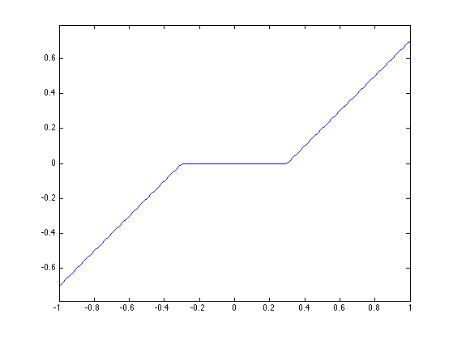
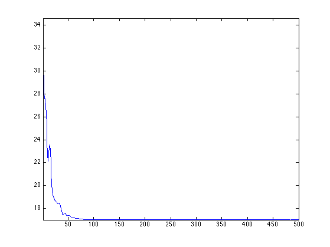
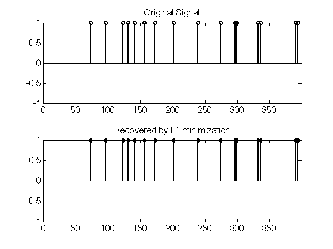
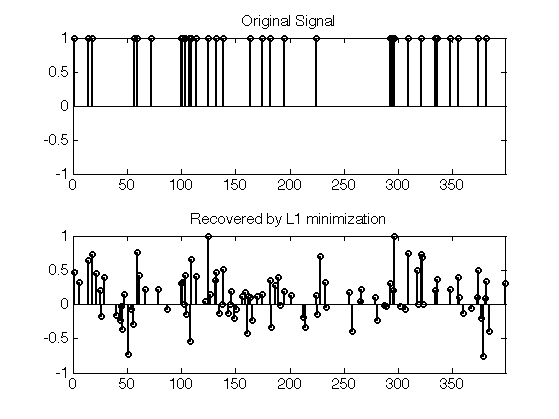

Douglas Rachford Proximal Splitting
This numerical tour presents the Douglas-Rachford (DR) algorithm to minimize the sum of two simple functions. It shows an application to reconstruction of exactly sparse signal from noiseless measurement using \(\ell^1\) minimization.
Contents
Installing toolboxes and setting up the path.
You need to download the following files: signal toolbox and general toolbox.
You need to unzip these toolboxes in your working directory, so that you have toolbox_signal and toolbox_general in your directory.
For Scilab user: you must replace the Matlab comment '%' by its Scilab counterpart '//'.
Recommandation: You should create a text file named for instance numericaltour.sce (in Scilab) or numericaltour.m (in Matlab) to write all the Scilab/Matlab command you want to execute. Then, simply run exec('numericaltour.sce'); (in Scilab) or numericaltour; (in Matlab) to run the commands.
Execute this line only if you are using Matlab.
getd = @(p)path(p,path); % scilab users must *not* execute this
Then you can add the toolboxes to the path.
getd('toolbox_signal/'); getd('toolbox_general/');
Douglas-Rachford Algorithm
The Douglas-Rachford (DR) algorithm is an iterative scheme to minimize functionals of the form \[ \umin{x} F(x) + G(x) \] where \(F\) and \(G\) are convex functions for which one is able to comptue the proximal mappings \( \text{prox}_{\gamma F} \) and \( \text{prox}_{\gamma G} \) which are defined as \[ \text{prox}_{\gamma F}(x) = \text{argmin}_{y} \frac{1}{2}\norm{x-y}^2 + \ga F(y) \] (the same definition applies also for \(G\)).
The important point is that \(F\) and \(G\) do not need to be smooth. One only needs them to be "proximable".
This algorithm was introduced in:
P. L. Lions and B. Mercier Splitting Algorithms for the Sum of Two Nonlinear Operators SIAM Journal on Numerical Analysis Vol. 16, No. 6 (Dec., 1979), pp. 964-979
as a generalization of an algorithm introduced by Douglas and Rachford in the case of quadratic minimization (which corresponds to the solution of a linear system).
To learn more about this algorithm, you can read:
Patrick L. Combettes and Jean-Christophe Pesquet, Proximal Splitting Methods in Signal Processing, in: Fixed-Point Algorithms for Inverse Problems in Science and Engineering, New York: Springer-Verlag, 2010.
A DR iteration reads \[ \tilde x_{k+1} = \pa{1-\frac{\mu}{2}} \tilde x_k + \frac{\mu}{2} \text{rprox}_{\gamma G}( \text{rprox}_{\gamma F}(\tilde x_k) ) \qandq x_{k+1} = \text{prox}_{\gamma F}(\tilde x_{k+1},) \]
We have used the following shortcuts: \[ \text{rprox}_{\gamma F}(x) = 2\text{prox}_{\gamma F}(x)-x \]
It is of course possible to inter-change the roles of \(F\) and \(G\), which defines another set of iterations.
One can show that for any value of \(\gamma>0\), any \( 0 < \mu < 2 \), and any \(\tilde x_0\), \(x_k \rightarrow x^\star\) which is a minimizer of the minimization of \(F+G\).
Compressed Sensing Acquisition
Compressed sensing acquisition corresponds to a random projection \(y=Ax_0\) of a signal \(x_0\) on a few linear vectors (the lines of \(A\)). For the recovery of \(x_0\) to be possible, it is assumed to be sparsely represented in an orthogonal basis. Up to a change of basis, we suppose that the vector \(x\) itself is sparse.
Initialize the random number generator to have always the same signals.
set_rand_seeds(123456,123456);
Dimension of the problem.
n = 400;
Number of measurements.
p = round(n/4);
Create a random Gaussian measurement matrix \(A\).
A = randn(p,n) / sqrt(p);
Sparsity of the signal.
s = 17;
We begin by generating a \(s\)-sparse signal \(x_0\) with \(s\) randomized values. Since the measurement matrix is random, one does not care about the sign of the Diracs, so we use +1 values.
sel = randperm(n); x0 = zeros(n,1); x0(sel(1:s))=1;
We perform random measurements \(y=Ax_0\) without noise.
y = A*x0;
Compressed Sensing Recovery using DR
Compressed sensing recovery corresponds to solving the inverse problem \(y=A x_0\), which is ill posed because \(x_0\) is higher dimensional than \(y\).
The reconstruction can be perform with \(\ell^1\) minimization, which regularizes the problems by using the sparsity of the solution. \[ x^\star \in \uargmin{ A x = y } \norm{x}_1 \] where the \(\ell^1\) norm is defined as \[ \norm{x}_1 = \sum_i \abs{x_i}. \]
This is the minimization of a non-smooth function under affine constraints. This can be shown to be equivalent to a linear programming problem, for wich various algorithms can be used (simplex, interior points). We propose here to use the DR iterative algorithm.
It is possible to recast this problem as the minimization of \(F+G\) where \(G(x) = \norm{x}_1\) and \(F(x)=\iota_{H}\) where \(H = \enscond{x}{Ax=y}\) is an affine space, and \(\iota_H\) is the indicator function \[ \iota_H(x) = \choice{ 0 \qifq x \in H, \\ +\infty \qifq x \notin H. } \]
The proximal operator of the \(\ell^1\) norm is the soft thresholding: \[ \text{prox}_{\gamma \norm{\cdot}_1}(x)_i = \max\pa{ 0, 1-\frac{\ga}{\abs{x_i}} } x_i. \]
proxG = @(x,gamma)max(0,1-gamma./max(1e-15,abs(x))).*x;
Display the 1-D curve of the thresholding.
t = linspace(-1,1);
plot(t, proxG(t,.3));
axis('equal');
 The proximal operator of the indicator function of \(H\) is the projector, and does not depends on \(\gamma\). \[ \text{prox}_{\gamma \iota_H}(x)_i = \text{prox}_F(x) = x + A^* (A A^*)^{-1} (y-Ax). \]
pA = A'*(A*A')^(-1); proxF = @(x,y)x + pA*(y-A*x);
There are two kinds of Douglas-Rachford iterations, depending on wether you first apply the projection or the thresholding.
The first algorithm, (DR1), reads: \[ \tilde x_{k+1} = \pa{1-\frac{\mu}{2}} \tilde x_k + \frac{\mu}{2} \text{rprox}_F( \text{rprox}_\gamma(\tilde x_k) ) \qandq x_k = \text{prox}_\gamma(\tilde x_k) \]
The first algorithm, (DR2), reads: \[ \tilde x_{k+1} = \pa{1-\frac{\mu}{2}} \tilde x_k + \frac{\mu}{2} \text{rprox}_{\gamma G}( \text{rprox}_F(\tilde x_k) ) \qandq x_k = \text{Prox}_F(\tilde x_k) \]
The advantage of (DR2) is the the iterates \(x_k\) always satisfy \(Ax_k=y\), so that one can only keep track of the evolution of the \(\ell^1\) norm during the iterations. We will use only (DR2) in the following.
Set the value of \(\mu\) and \(\gamma\). You might consider using your own value to speed up the convergence.
mu = 1; gamma = 1;
Define the rprox operators.
rproxG = @(x,tau)2*proxG(x,tau)-x; rproxF = @(x,y)2*proxF(x,y)-x;
Number of iterations.
niter = 500;
Exercice 1: (check the solution) Implement the DR iterative algorithm on niter iterations. Keep track of the evolution of the \(\ell^1\) norm.
exo1;
We display the convergence speed of the \(\ell^1\) norm on the first half iterations, in log scales.
plot(log10(lun(1:end/2)-lun(end)));
axis('tight');

Display the original and the recovered signals. Since the original signal is highly sparse, it is perfectly recovered.
clf; subplot(2,1,1); plot_sparse_diracs(x0); set_graphic_sizes([], 15); title('Original Signal'); subplot(2,1,2); plot_sparse_diracs(x); set_graphic_sizes([], 15); title('Recovered by L1 minimization');
Exercice 2: (check the solution) Test the recovery of a less sparse signal. What do you observe ?
exo2;
Evaluation of the CS Recovery Probability
In order to bench in a randomized manner the efficiency of compressed sensing, we compute the probability \(p_s\) for a \(s\)-sparse signal with random non-zero coefficient locations to be recovered by \(\ell^1\) minimization.
Put formally, if we call \( x^\star(y) \) the resolution of the \(\ell^1\) problem using measurements \(y\), then we want to compute with Monte-Carlo sampling \[ p_s = \mathbb{P}( x^\star(Ax)=x \:\backslash\: \norm{x}_0=s ) \]
An important feature of the DR algorithm is that it can be run on many signal at once.
Number of signals.
q = 1000;
List of benched sparsity.
slist = 14:2:42;
List of sparsity of each signal
Slist = slist(mod(0:q-1,length(slist))+1); %%per % Genetate signals so that |x0(:,j)| has sparsity |Slist(i)|. U = rand(n,q); v = sort(U); v = v( (0:q-1)*n + Slist ); x0 = U<=repmat( v, [n 1] );
Measurements.
y = A*x0;
Exercice 3: (check the solution) Perform DR on the set of signals x0. Note that the proximal mappings operate in parallel on all the signals in x0. Each i, count the average number proba(i) of recovered vectors of sparsity slist(i) (up to a given, small, precision).
exo3;